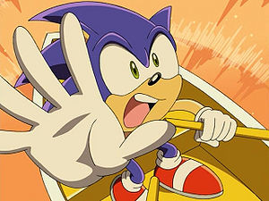
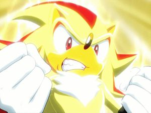
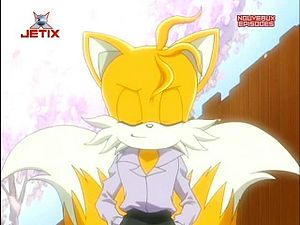

Sonic X
 De: La Frikipedia, la enciclopedia extremadamente seria.
De: La Frikipedia, la enciclopedia extremadamente seria.
| De la serie anime para todos:
|
| Sonic X
|
|
|
| Efectos especiales que te cagas. Tanto, que el pobre de Knuckles casi se quedó cegato
|
|
| Género:
|
Acción, Shonen (no es lo mismo que Shonen Ai, no seais malpensado)
|
| Episodios:
|
78
|
| Autor del manga:
|
Hajime Comegato Kamegaki
|
| Publicación:
|
No se
|
| Publicado en:
|
No se, MIERDA
|
| Director del anime:
|
El mismo
|
| Transmitido en:
|
todos los países, excepto Antártida y Gröenlandia (porque no son países, wey!, aunque les envidio la suerte que tienen)
|
| Ovas:
|
si, dos, pero anteriores a Sonic X, así que ninguna de las do es de esta versión tan mala
|
| Películas:
|
porno
|
| Notas
|
Un erizo azul contra un Calimero inverso, ¿a quien se le ocurre esa idea?
|
(Ojo, no es una serie hentai, mentes perturbadas)
xD
Seguramente muchos no habreis oido hablar de ella. No es de estreñir (ups,quise decir extrañar)
La serie en general
Bueno, pues empezamos diciendo que se hizo en un ataque de celos al ver el rotundo éxito en América que tuvo una serie del Super Mario ese (hasta hicieron una película friki más falsa que los goles de Oliver Aton).
Y pensaron que era mejor hacer una serie de Sonic. ¿Mejor?, Si,claro, y voy yo y me lo creo. Tras su estreno en Japón y en América en 2003, en España, que fue en el 2005 (como siempre los ultimos en todo), se avecinó una elevada tasa de mortalidad producida por esta serie, que además es diferente a la versión japonesa, ya que quitan partes de los episodios. Que peaso de cabrones.
 En uno de los rodajes cayó la cámara encima de Sonic
Aqui tenemos al Dr.Eggman estudiandose las tablas de multiplicar... digo, el guión
El niñato tiene un sueño erótico tan caliente que hasta le sale la calentura por la cabeza.
Joder!, ¿pero qué estaban haciendo?, ¡parece que los pillaron con las manos en la masa!
Si escoges la píldora esmeralda azul termina la historia, despiertas en tu cama y crees lo que tú quieras creer; con la roja te quedas en el país de las maravillas, y te mostraré a dónde lleva el agujero del conejo... Sombra...,digo
Shadow, murió en la segunda temporada, posiblemente, por los peligros del cigarro...
 ...Pero revivió en la tercera temporada, porque sacó fuerzas de su
amiga María.
Sonic se fue al
Lado Oscuro de La Fuerza para esconderse de los fans que lo querían abuchear por lo chapucero de éste anime, y así consiguió escapar del bochorno.
¿De que puñetas va esto?
Pues esto hijos/hijas míos, es un anime de solo tres temporadas de 26 episodios cada una (menos mal que no es jodidamente larga como la de Oliver y Benji o Dragon Ball Z).
La primera
Va de que Sonic y sus amigos se enfrentan al dr. Eggman por décima vez (de ahi la X de Sonic X, como veis no esconde nada pornográfico) y va Sonic al final y la caga con un Control de Caos descomunal, enviando a todos ¿a tomar por culo? Pos no,pero casi. Los envian al planeta Tierra. En los juegos de Sonic de 128 bits, él y su pandilla convivían con los humanos, pero en los de 16-bits vivian en otro planeta, así que como los mismos realizadores la liaron tuvieron que juntar los errores de continuidad y explicarlos con esta serie de anime. Como iba diciendo, Sonic fue a parar a una autopista y se echó una carrera con un tio que es una cutreparodia de Michael Schumacher, parando al final en su lugar terrorífico: la piscina de una mansión. Patetico, verdá; pues ese miedo viene porque no le gusta mojarse (si claro,lo que pasa es que es un puerco espín XD); seguramente será porque el agua le recuerda a la fase Labyrinth Zone del Sonic the Hedgehog, juego de la Mega Drive, donde se ahogó mas de cinco veces seguidas y despues de usar unos cuantos continues se siguió ahogando varias veces mas. Cuando estuvo a punto de ahogarse, lo salva el niño de la mansión, y asi acaba el primer (y patético) episodio. Los siguientes va de que, después de encontrar a su pandilla, Sonic y ellos se refugian en la casa del niñato este, con su abuelo y sus pobres sirvientes, evitando catastrofes del Dr. Eggman, recogiendo Esmeraldas del Caos y ayudando a los problemas del niño, como llevarlo a la escuela, traer flores para una fiesta, reunir a sus famosos padres o llevarlo a otros sitios, como a la playa, al centro comercial, de crucero, a unos estudios de cine, etc.; como veis, es patetico. Al final de esta catastrófica temporada, cuando recogen las esmeraldas, las usan para enfrentarse al Dr. Eggman, aunque eso llevó a un Control de Caos que los condujo ¿a tomar por culo? Pos no, pero casi (ostia, esto ya lo dije antes). Lo malo es que el niñato no queria que Sonic se fuera y lió la de San Tintín: las cosas que habian en el planetucho de Sonic fueron a parar al nuestro (hasta trajeron a un mierdoso gato con una rana que ya arruinaron el juego Sonic Adventure y para colmo de males ahora vienen a arruinar este anime que ya de por sí solo bastante jodido está).
Y asi acaba por fin la peor temporada de la serie (buf,que alivio).
la segunda
De la segunda no tengo mucho que decir, ya que han añadido la historia completa de los juegos Miyazaki). Eso si, me voy a parar en la aparicion de Shadow en la serie. ¿Pero qué han hecho? La han cagado más todavía llamandole Sombra (horrible, espantoso, catastrófico, monstruoso). Y al final, Sonic y sus amigos consiguieron energía suficiente para crear otro Control de Caos para llevarlos ¿a tomar por culo? Pos no, pero casi (ostia, otra vez, y eso que a la tercera va a la vencida). Los envió por fin a su planetucho. Lo malo es que el niñato de marras, como quería mucho a Sonic (como veis,le gusta el sexo zoofilico), lo secuestró y se lo llevó a su casa de campo, pero al final con un poquito, tatitotito, de esfuerzo (y unos trescientos guardias como espartanos), Sonic volvió a su planeta, donde salvó a sus amigos del Dr.Eggman otra vez. Al final acaba la temporada con la imagen de Sonic abrazando a su 'presunta' novia Amy y riendose(otra mentira, ya que él odia a Amy). Tambien acaba con la imagen del niñato, ya creciito, con ganas de volver a ver a su novio Sonic.
la tercera
Esta a sido la temporada menos cutre, ya que se han puesto pocas mierdas; pero como los tíos estos iban escasos de ideas, pusieron cutreparodias de Star Wars y Star Trek, y un tour galáctico estilo Dragon Ball GT. Esta vez, Sonic tenia que salvar su galaxia de un extraterrestre llamado Dark Oak (parodia de Darth Vader), que lideraba una secta alienigena llamada ¿Metarex?, cuyo objetivo era una galaxia mejor (matar a todos los animales y reemplazarlos por plantas y máquinas). Pero que mejor que Sonic y los productores de la serie para joderla mas todavia. El inconveniente es que se suma un nuevo personaje para rematar la faena, y el niñato de las otras temporadas ¡HA VUELTO! ¡NOOOOOOOOOOOOOOOOOOOOOOOOOOOOOOOO! (esto produjo suicidios masivos en Japón, peores que los de las sectas Moon y Falun Gong juntas). Al parecer,siguio teniendo su obsesion por Sonic, y se metió en un cacharro que le llevó ¿a tomar por culo? Pos no, pero...ojala XD. Le llevó al planeta de Sonic (¿Möbius?). El inconveniente que tuvo es que se volvió pequeñito (chupate esa, jodio niñato). Para sobrevivir, ayudará a Sonic y su clan de extraterrestres zoomórficos en la lucha contra los aliens mecanizados. LLendo de un planeta a otro recogiendo esmeraldas (ya dije que es como en Dragon Ball GT, donde van de planeta en planeta recogiendo esferas de dragón), al final se topa contra los Metarex. Usan todo su superpoder y no les vencen (pues sí), hasta que el nuevo personaje de la temporada, con too su valor,los aniquila (pues vaya, el pesonaje es más fuerte del grupillo) y al final se muere (ese sí que es un valiente, no como los otros fikis de sus compis). Al final, todos vuelven a sus casas, incluyendo el niñato ese, que se metió en una capsula voladora de vuelta a su planeta.
Me estas trolleando ¿En serio es el fin?
Pos no se sabe (yo espero que sí), porque se han dejado cosas sin completar los jodefans de Sonic estos (los productores de la serie).
- Shadow (que murió en la segunda temporada, pero volvió montando barullo) se volvió a morir al final de la tercera temporada (este chaval es un fantasma), mientras que en los videojuegos actuales sigue vivo. ¿Resucitará? Como dije antes, a la tercera va a la vencida, asi que cuidado,cuidado,cuidado.
Por cierto,en esta temporada lo llaman Shadow; seguramente se habran dao cuenta los productores de la serie que la cagaron llamandolo Sombra. Algo así parecido le ocurrió a Saske (Sasuke), el de Naruto.
- El niñato que se montó en la capsula, ¿se habrá perdio por el espacio? ¿Se habrá ido por fin a tomar por culo? Y si na de eso ocurre (por desgracia), al volver a su planeta, ¿será pequeño o grande? Si es pequeño, ¿le dejarán sus padres pajearse con fotos de chicas en pelotas, como cuando era mayor?
- Otra cosa es que los fans de la serie (7 o 8, menudos supervivientes) es que quieren que el personaje nuevo de la tercera temporada resucite. ¿Es que se creen que el nuevo personaje desciende de Jesucristo o qué?
Y hasta aqui la historia. Como vereis, este titular es grande. Lógico, es que he puesto todo lo que había en la serie, pa que os hagais una idea de que va este bodrio, y pa que no la veais (anda que me preocupo por vosotros,¿eh?).
Personajes
Momento íntimo en el que Sonic y Knucles comparten emociones espiando a
Paris Hilton.
El niñato ese en uno de sus momentos intimos con su amiguete el negro
Los
errores de continuidad son otro punto flojo de la serie (y son lo único que tiene en común con los videojuegos de la saga) U_U
Pachacamac y sus guerreros subieron de peso en la serie, y por la escenografía de fondo parece que se fueron de vacaciones a
Stonehenge.
Chaos fue otro personaje importante durante la saga del
Dreamcast porque al menos lo hicieron chido, a diferencia de Knuckles, Tails, y los demás a los que les cagaron el protagonismo y los hicieron muy cutre.
El
Finalhazard fue otro personaje importante durante la saga del
Dreamcast porque al menos ahora lanza el
rayo laser por la boca como debería haber sido en el videojuego, pero por todo lo demás aquí en la serie lo hicieron mucho mas chafa que en el videogame.
Bueno,la mayoria os sonará: Sonic, Tails, Knuckles, Amy, Cream & Cheese, Big & Froggy (Estos son el mierdoso gato con una rana que mencioné mas arriba), Shadow, Rouge, el Dr. Eggman, etc. Así que os hablaré de los que no conoceis (ni los conocereis en vuestra vida; con solo deciros que hacen se os caerán los calzoncillos).
- Chris: Si, así se llama el niñato ese que tanto lo odio. Desde que conoció a Sonic,se volvió jodidamente mimoso. Cuando descubrió que era un superhéroe, el gay zoofilico este alucinó en colores; pensó: 'Que guay, me he enamorao de un superhéroe'. Se hace el remolón cuando ayuda a Sonic, pero al final es Sonic el que le ayuda a él. Encima es un pijo niño de unos padres famosos archimillonarios. Me da asco. Es una cutreparodia de Sora del Kingdom Hearts y del Tai de Digimon (hasta tiene su voz, osea que...).
- Chuck
Norris: El abuelo del niñato ese. Si para Chris Sonic lo es todo, para Tails (el zorro de las colas que siempre sigue a Sonic) Chuck lo es todo. Desde que le ayudó a mejorar su mierdoso avioncito, jamás se volvio tan motivao como ahora.
- Los sirvientes: son dos los sirvientes que sufren siempre cuidando del jodio niñato ese. Son: un mayordomo chino clavaito al de Tenn (ya saben,el de 'El algodon no engaña') que se pirra por las peliculas de artes marciales (exceptuando Kill Bill), el muy friki; y una mulata que le hace al niñato sus papillitas pa que no llore. ¿Cómo se pueden dejar tratar como esclavos, los pobrecitos?
- Decoe y Bocoe: Son los enfermeros del dr.Eggman. No se como la han podio cagar más poniendo dos mierdosos robots de pacotilla. Me gustaban más los otros que salían en las antiguas (y mejores) series americanas de Sonic. Si,si, uno en forma de gallo y otro con forma de cafetera. Qué tiempos aquellos, ¿eh? ¿eh? ¿eh?
- Bokkun: el robot mensajero del dr.Eggman. ¿Mensajero este? Pero si mi tio que es cartero lo hace mejor que este robot de pacotilla. Pa que veais de que sirve las nuevas tecnologias esas de mierda.
- Los amigos de Chris: Son 3 idiotas como las chicas de H2O que,como él, tambien se motivan por Sonic. Son:
- Danny: Un negro butanero que le gusta el baloncesto (me recuerda mucho a Michael Jordan)
- Frances: Una pija presumida de mierda que le atraen las canciones de Katy Perry.
- Helen: Una paraplejica rubia que fué Violada por
Sam Speed, Chris, Danny, Shadow, Knuckles, Sonic, más otros multiples hombres que se relasionan con la velosidad y la dejaron invalida, (esta me recuerda a la Clara de Heidi).
- El señor presidente: Bueno, no es clavaito al Bush (y mucho menos a Obama), pero es un tio nasio pa mandar, como El Super de la TIA. Siempre lo encontrarás sentaito en su sillon de la casa blanca. Lo que no se sabe es si este tipo tambien busca a Osama Bin Laden.
- Los escoltas y espias del presi: Los forman Rouge, una tia con la misma voz de la protagonista de Blood +, un tio con gafas en plan agente del mundo de Matrix, y otro que hace de profesor en el parvulario del niñato ese. Tambien hay uno que acompañaba al presidente, pero fue despedido por tratar con el dr.Eggman para hacerse con el poder, además de estar celoso de Sonic.
- Scarlet Garcia: Es una reportera del telediario del canal SSTV (Station Square Television, no confundir con un canal de television nazi). Siempre que enciendas esa caja tonta y pongas este canal, siempre te la encontrarás hablando sobre algo raro que ha hecho el Eggman. Ademas, se lia con el profe espia, la muu cerda.
- Sam Speed: Este tio es la cutreparodia del Sumacher ese que ya os dije más arriba. Se creia más rápido que el Correcaminos, Speedy Gonzalez (Identidad real: David "Speedy" o "Spiri" González) y Forrest Gump, hasta que salió Sonic y en dos o tres carreritas, el Sumacher este perdía siempre. Además, es el tito del niñato ese (joder, siempre el niñato ese; ojalá se muera).
- Lucky: El robot de la suerte de Eggman. En un torneo que hicieron para ganar una esmeralda de esas, el 'joio' siempre ganaba, quedando semifinalista por culpa de Randy Orton, que le dio una superpatada en todo el "bandajo" y se inutilizo para siempre.
- El equipo Chaotix: Vector, Charmy y Espio son tres detectives con el mismo coeficiente intelectual que Mortadelo y Filemón, pero muy agiles y mas patosos. Todo lo que terminan se lo dedican a su amigo Mighty, que se encuentro oculto en la caja de Pandora de Sega.
- Emerl o Gizoid: Es un robot usado para combate, pero les salio el tiro por la culata y se enamora de Cream, el muy jodio.
- Vanilla The Rabbit: Es la madre de Cream The Rabbit, y también le da de comer a Cheese (joder, de oir todos los nombres esos me estan entrando hambre. Me voy a comer una tarta de queso con crema de vainilla y ahora mismo vuelvo).
Vale,ya he vuelto.Ahora hablare de los personajes de la tercera temporada.
- Dark Oak (parodia de Darth Vader): Es 'El Super' de los Metarex. Su objetivo es ser los reyes del Universo de Sonic (me refiero a la saga Sonic). Al final de la temporada, él y dos de sus escoltas se convierten en dinosaurios peligrosos, los cuales son descendientes de los koopalings de Bowser.
Cosmo, la nueva personaje de la tercera temporada. Con esta cara porque Sonic le quitó el bocata

Tails y Cosmo en una escena
"romántica". Lo que no se ve en la imagen es alto secreto.
- Cosmo: Este es el nuevo personaje que os decia antes. De este personaje tengo mucho que decir, ya que ha marcao una huella (sin sentido) en la serie. Bueno, empecemos diciendo que es una chica extraterrestre en forma de planta que procede de un planeta de plantas (sería una tontería que fuera del planeta de los Nabish). Ella buscaba a Sonic (Dios sabrá para qué lo buscaba a él), porque es la superviviente de su planeta destruido por los Metarex. Se unió al equipo friki de Sonic para ver lo peor que lo hacían. Episodios mas tarde, la serie se convierte en un culebrón, ya que la tia se enamora de Tails (ostia,una planta se enamora de un zorro; esto no es zoofilia, es 'botanicofilia' XD). Muchos frikis se interesaron por el cutreromance de estos dos. En los episodios finales, se descubre que en realidad es una espia de la secta de los Metarex sin que ella lo supiera, y Sonic, haciendose pasar por Jigsaw, intentó convencer a su clan decide quitarle los sentidos a la pobre para que no les espiara más (y por si acaso cortarle las piernas), pero Tails se opone (uyuyuy, que interesante se pone esta telenovela; no cambieis de canal). Al final, cuando muere en la batalla universal contra los Metarex, Tails se queda en un estado más melancolico que aquella vez que tomó drogas con Sonic (póecito). Pero, en el lugar donde murió, ¡surgió una semilla! (los que vieron esto sospecharon de una posible 'botanicofilia' entre Tails y Cosmo, además de preguntarse: ¿cómo lo han hecho pa que, al final, salga una semilla?), y Sonic coge esa semilla (que casualidad, lo jodiamente enorme que es el espacio para luego coger un objeto de 1 mm. de tamaño) y se la da al póecito de Tails. Y él se arrodilló ante las piernas de Sonic y se puso a llorar (no se si eso de arrodillarse ante las piernas de Sonic fue casualidad o...). Pero,en una aparicion mariana que tuvo, salió Cosmo diciendole que estaria en sus sueños (pero en qué tipo de sueños. Ups,perdon, que me estoy saliendo del tema). Bueno,pos aqui acaba la telenovela y la larguita biografía del personaje.
Ah, una cosilla, ¿sabeis que la idea de crear a este personaje fue demasiado negativa? Tanto, que al principio tiraron a la papelera todos los diseños del personaje. Al final,conservaron solo un diseño o dos. Pa que veais pa que sirve meter nuevos personajes.
Y ahora,un caso aparte:
 Tails en plan "
donjuán" pensando qué se comerá hoy.
- Tails: Bueno ya lo conocíais de toa la vida, pero en la serie es el personaje mas importante por dos motivos: por construir avioncitos (El Tornado X y el Blue Tiphoon, este último es una cutreparodia de una nave de Star Trek), y otra por sus romances (porque el tio da igual lo que pille,se lo come de toas formas):con Sonic (pero eso fue al principio de los juegos de Sonic), con Cream, con Chuck (el abuelo del niñato subnormal ese) y, finalmente, con Cosmo (menudo donjuán esta hecho el tio). Pero Tails, aunque cambie, seguirá siendo un tontorrón. Sinó, hay un ejemplo en el episodio 31, cuando Tails tenía que desactivar un misíl peligroso antes de que explotara. No sabía qué cable cortar y se preocupó por no tener a Sonic al lado ya que sabría qué hacer en esos momentos (se creía que Sonic era un vulgar electricista), pero al final, después de rezar 20 Avemarías, cortó un cable al azar y... no explotó. Tails no podía creerselo; se motivó y lloró de la emoción, mientras que los ciudadanos le trataron como a un héroe y se arrodillaron ante él (bueno, eso último no, pero si lo hubieran hecho sería el colmo del olmo) Lo más impactante es que en la serie Aventuras de Sonic el Erizo este aweonao resultaba ser una zorra en toda su palabra, era una mina menstruonica y aweonaa que Robotnik (y no Eggman) decidió violarla con dos asesinos a sueldo llamados Scratch y Grounder.

Al igual que Nazo,
Wechnia también iba a aparecer en el anime pero al final lo cortaron y lo dejaron fuera de la serie (
censuradores de
mierda!!!).
- Nazo: El Nazo es un bicho raro que salió en el spot de publicidad de la conchuda serie, lo que dio a conocer la creación de una posible cuarta temporada, pero los agentes dobles de Obama lo evitaron a tiempo. Es como un erizo Supersaiyan pero blanco, se cree que era el prototipo de Silver, el del futuro, pero luego se dieron cuenta que este iba a ser el malo maloso de la cuarta temporada. A pesar de tener buena imagen para que la serie tuviera algún éxito, los agentes lograron entrar a la cadena 4Kids y eliminaron los dibujos del Nazo, logrando evitar la que sería la mejor temporada de la serie. Tanto es esto, que al final terminaron sacando la nueva temporada, porque cuando los de 4KIDS se proponen algo no paran hasta hacerlo, por lo que si quieren meterse el deo por el culo y olerselo no paran hasta hacerlo. Pero para que nadie supiera su existencia, sacaron la "New Season" en un sitio gringo de Internerd, Newgrounds.com. Este sitio era característico por tener los segundos mejores videos del mundo (Luego de Yu-Tub) pero como los gringos odian los subtitulos les ponen sus voces maricas, por eso nadie las ve por dos razones, primero porque no entienden nada de los que los pijos personajes dicen, segundo porque pueden hacer que el personaje mas genial se la pase haciendo taradeces, y tercero, porque me estoy cansando de sacar tanta información (Deberían agradecermelo, me preocupo por ustedes). En resumen sacaron la mierdosa cuarta temporada en Newgrounds con el nombre de Nazo Unleashed y aunque usted no lo crea tuvo exito, a los putos gringos les gustó. Esta "ingeniosa" "novedosa" y "puta" temporada trataba de que los animalejos de Mobius estaban tranquilos durmiendo cuando sale el Nazo para mandarlos a la mierda. Tails parece un Cyborg porque se implantó un cañón en su brazo (plagiando a Megaman) y le dispara al nazo pero no le hace nada, asi que viene Shadow a ver como el nazo se roba las esmeraldas y se vuelve Perfect Nazo y quiere mandar a todos a la mierda incluso vencen a Sonic y Shadow en nivel dos de Supersaiyan (En Mobuis el supersaiyan dos es el supersaiyan uno multicolor que muestra muchos colores en lugar de amarillo incluyendo rosita). Todo parecía perdido cuando llega el plagio definitivo. Sip, lo que esperaban llegó. Fuuuuuuuuuu-sióóón Ha!!!!!! Sonic y Shadow hacen la fusión y se transforman en ¿¿Shadic?? y lo mandan a la mierda al nazo. A los nerds les gustó tanto que, a pesar de ser una temporada, duró tres episodios, que seria el equivalente a 36 episodios en televisión. Si quieres verlo, tienes que aguantarte a los gringuitos diciendo cosas como "Oh Yeah" o "Let's Go to bed bitch, hehehe" pero te avisamos que si te bancas las voces, los pobres dibujos y la cantidad de plagios, bancarte estar hasta las 4:01 AM viendo esto, con mucha suerte
y un bizcocho, por el culo te lo entocho a ti y otros ocho xD vas a........... dormirte.
Screenshots
Ésta es la única manera de que Amy atrape a un hombre.
Las malnacidas están pensando en violarte...
Ahora que es pequeña se ve muy inocente, pero de mayorcita la veremos trabajando para Playboy.
Knuckles contemplando la ascención de Angel Island.
Knuckles demostrando la ascención del Ki.
Shadow con cara de idiota.
Shadow llevándose a María a un cuarto de hotel (o sea que no era tan idiota...)
Sombra escondiéndose en la sombra (valga la redundancia).
¿Sonic amigo de Eggman?, ¡debe estar drogado!...
Sonic tirándose un pedo descomunal.
Shadow antes de cometer el primer crimen en nombre de Sonic.
Sonic después de ser arrestado por el crimen que cometió Shadow.
Aquí vemos cuando se lo llevan a Guantánamo para encerrarlo con todos los demás disidentes como él.
Gerald Robotnik tiene antecedentes policiales...
... Porque se "correteaba" a su nieta María!...
...¡Y aquí está la foto que lo prueba!
Amy viendo el video prohibido de Sonic sin el consentimiento del erizo...
... Y para recompensarlo harán un nuevo videíto juntos...
... Y ahora le toca a Knuckles!!!
Otra vez el erizo negro se aparece entre las sombras, ¿pero que trama ahora?...
... Al parecer planea robarle el protagonismo a Sonic!!!
Enlaces inútiles
Autor(es):
- Krusher
- Frikiman
- Mr Dios
- Alex2610
- Viento
- Nadaquever
- Erazor
- Alex el Mono
- Naruto hyuga
- Tiniracoon
Frikipedia 2005-2016, Licencia
GFDL 1.2 - Extraído por FrikiLeaks